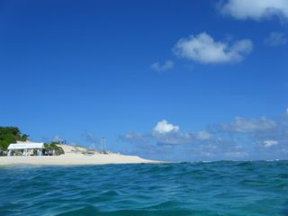

About us
AQUAは慶應義塾大学湘南藤沢キャンパス徳田・村井・楠本・中村・高汐・バンミーター・植原・三次・中澤合同研究プロジェクト内の研究グループです。
専門分野：量子計算、ムーアの法則後のコンピュータ・アーキテクチャ、ディストリビューテド・マス・ストレージ・システム

AQUA = Advancing Quantum Architecture (先進的量子アーキテクチャー）
ムーアの法則（半導体の集積密度は18～24ヶ月で倍増するという法則）は技術的、原理的な問題のため、2010年代には通用しなくなると予想されています。すなわち、私たちが現在使っている古典的なコンピュータの性能の向上が限界に達しようとしているということです。
そこで登場するのが全く新しい計算機である量子コンピュータです。これは量子力学の特殊な性質を利用することで、既存のものでは為し得ない超高速な計算が可能になるコンピュータです。 ムーアの法則後のコンピューティング技術として現在大いに期待されているものです。
そのような背景のもと、AQUAでは、大規模な量子コンピュータの開発を加速するために、 そのシステム構成、サーキット構造、およびアルゴリズムを研究しています。

News
上のスクロール：IFRAME news.htmlみたいな外部htmlを作って参照してる デメリットは、アドレスに毎回target="_blank"を打たないと枠内でサイトを開く.......
下のスクロール：DIV allign このHTMLに直接書くだけ。つまりここで整える。(昔の持ってくるのがちょっとめんどくさい&日付無しになるかも )(上でも日付無しになりそうだけど)
- News 更新履歴 -
2017 10/02 - AQUA webサイトリニューアル
2017 09/01 - yume(B2),Mitei(B1)が加入しました!
2017 04/01 - paton(B2)が加入しました!
2017 00/00 - 虚無なページリンク
2017 00/00 - 虚無なページリンク
2017 00/00 - 虚無なページリンク
2017 00/00 - 虚無なページリンク
XXXX XX/XX -
More(history)
2017 10/02 - AQUA webサイトリニューアル
2017 09/01 - yume(B2),Mitei(B1)が加入しました!
2017 04/01 - paton(B2)が加入しました!
2017 00/00 - 虚無なページリンク
2017 00/00 - 虚無なページリンク
2017 00/00 - 虚無なページリンク
2017 00/00 - 虚無なページリンク
XXXX XX/XX -
More(history)